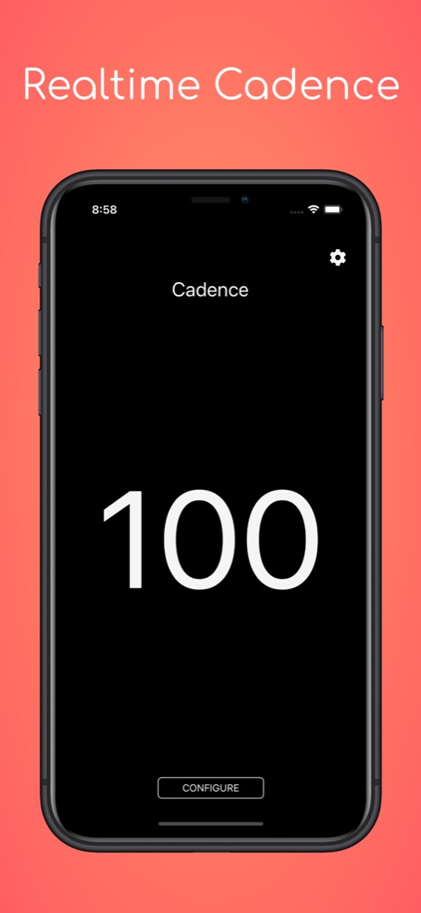
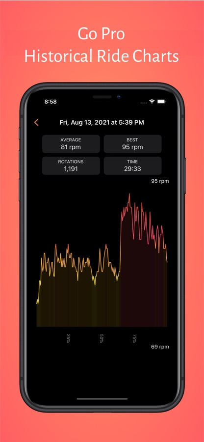
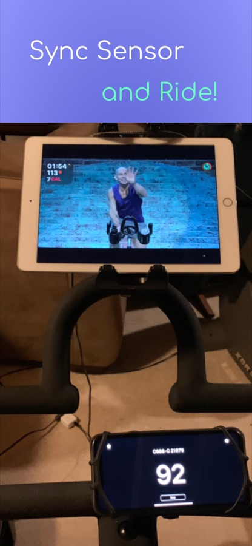

Real-time Cadence Display
Connect your Bluetooth sensor and see your cadence instantly. Simple, fast, and always free.

Free forever with optional Pro customization
Zero analytics. Your data stays on your device.
Light & Dark modes built in
Track Your Progress
For Pro users: see your ride history organized by month, with average cadence, maximum cadence, rotations, and elapsed time. Watch your improvement over time.
Upgrade to Pro to unlock full ride history and custom theme colors.


Sync Your Sensor and Ride
Works with Wahoo, Moofit, Garmin, Magene, and any standard Bluetooth LE cadence sensor. No account. No cloud. Just pure real-time cadence on your device.
Tap Configure, select your sensor, and start riding. That's it.
Why My Cadence
Privacy First
No internet required. No analytics. No tracking. Your cadence data never leaves your device.
Works Offline
Connect via Bluetooth and ride. The app works perfectly without any internet connection.
Beautiful Display
Large, easy-to-read numbers with customizable colors and themes. Dark mode included.
Sensor Compatible
Works with all standard Bluetooth LE cadence sensors from popular brands and bike computers.
Compatible Sensors
Works with Wahoo, Moofit, Garmin, Magene, and other standard Bluetooth LE cadence sensors